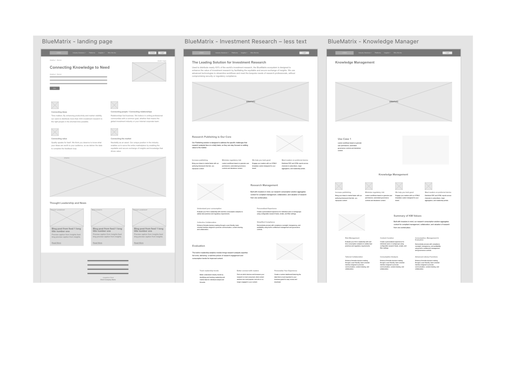
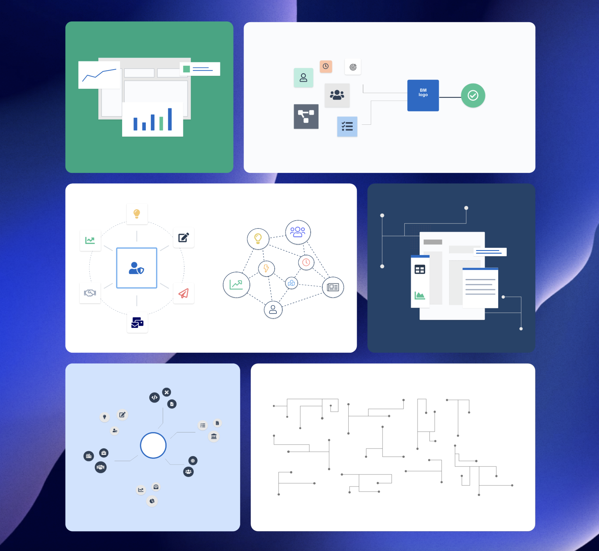
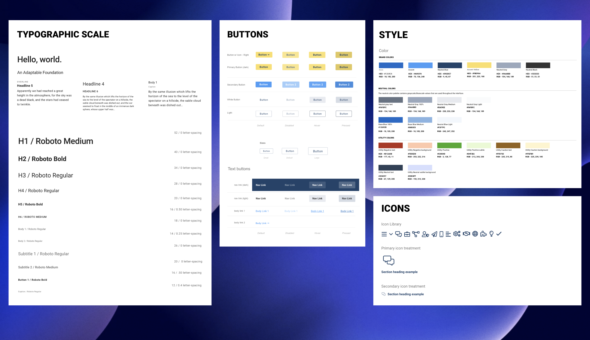
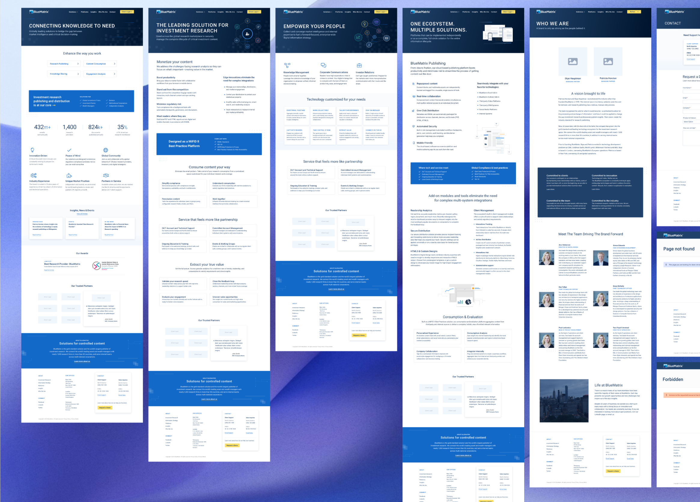
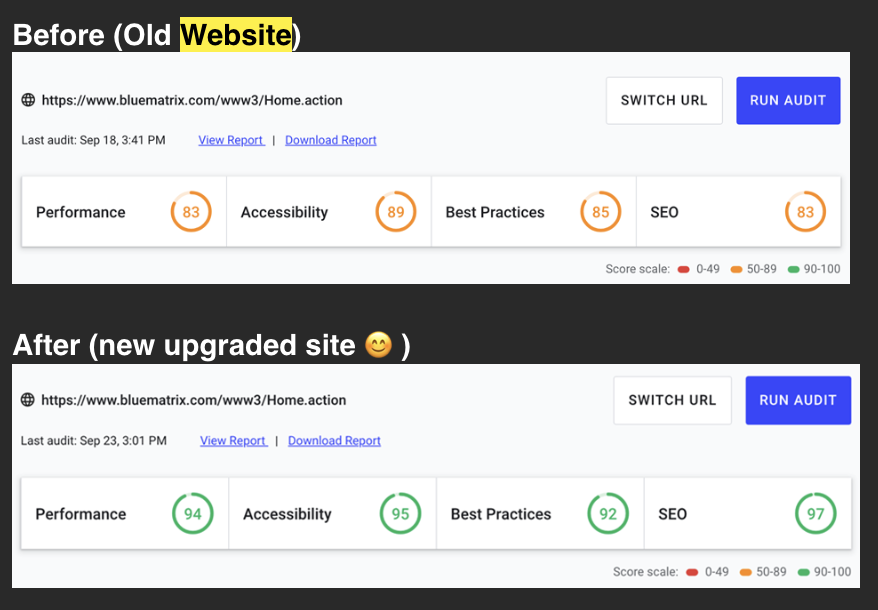

Company website redesign
Highlighting market expertise for improved product communication & impact
BlueMatrix
Role: Lead Designer & Developer
Overview
BlueMatrix needed a more robust website to reflect its evolution and launch a new corporate logo and visual identity. The redesign was an opportunity to better communicate the platform's capabilities and reposition the brand for growth.
Goal
Beyond an updated look and feel, the primary goals were to:
- Restructure how we market investment research products
- Reposition market expertise to attract new industries
- Introduce an insights page, client logos, and product graphics to build brand trust
Discovery
I translated early discussions between design and marketing teams into low-fidelity wireframes, used to visualize how text-heavy content would fit each page and how to balance it with visual elements.

Moodboards, graphics, and mockups
A fellow designer and I developed mood boards, design systems, and core visual elements, presenting regularly to leadership to ensure alignment. We incorporated feedback from stakeholders across the organization including the CEO, Sales, and Product leads.
After design approval, I led development and implementation of all webpages, including forms, authentication flows, and blog publishing.



Results
The redesign shipped with meaningful improvements in accessibility, SEO, and performance, and received strong positive feedback across the organization.
The result is clean, stylish, bug-free, performant and appropriate for our industry. We've all heard a lot of positive comments so far.
